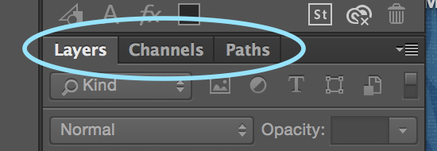
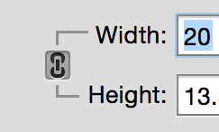
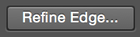

Photoshop 1
Introduction to Image Editing
Introduction
Adobe Photoshop, a part of the Adobe Creative suite, is a powerful image editing and manipulation program. Used worldwide by professional photographers and designers, Photoshop is considered industry standard.
About this Class
This class introduces the basic concepts and functions of Adobe Photoshop CC. By the end of this class, you will have worked with many of Photoshop's core features. This includes basic image adjustments, photo correction tools, and content manipulation tools. We will also be using these skills to design and create a simple poster, that will be used in print media and on the web.
Photoshop 1 is the first in a series of Photoshop classes and is intended to serve as an introduction to the program, and to the concept of digital image editing in general. In order to explore more advanced techniques, students should consider enrolling in Photoshop 2: Filters and Effects or Photoshop 2: Portrait Retouching.
Prerequisites and Requirements
Outcomes
After completing this manual, learners will know:
- The elements of the Photoshop interface including Tools, Panels, and Layers
- What Adjustment Layers are and why we use them
- What pixel dimensions and image resolution are
- The difference between RGB and CMYK color modes
and will be able to:
- Navigate the Photoshop interface
- Use the Crop and Straighten Image tools
- Resize images
- Add and adjust the following Adjustment Layers: Levels, Brightness/Contrast, Color Balance
- Use the History Panel to adjust multiple levels of Undo/Redo
- Remove Red-Eye from images
- Remove blemishes with the Spot Healing brush
- Create and edit new documents
- Add and edit text with the Type tool
- Create seletions with the Quick Selection tool
- Save and export documents in a variety of formats.
Photoshop Interface
This section provides a brief overview of the Photoshop interface and describes its commonly-used components.
To open Photoshop, click the blue Photoshop icon in your computer's dock or taskbar. If you don't find it there, you may have to search your computer's installed applications to find it.
Photoshop Workspace
The portion of the Photoshop interface that is used to view and edit documents is known as the workspace. A wide variety of windows, tools, and menus (known as panels) can be displayed within the workspace in order to provide quick access to the features needed for a given task.
Pre-Defined Workspace Layouts
Photoshop offers an incredible amount of features and tools, which often causes the workspace to become cluttered quickly. Luckily, Photoshop has pre-defined layouts of panels and menus, known as workspace layouts.
-
In the menu bar at the top of the screen, select Window > Workspace. Here you can see a full list of all pre-defined workspace layouts available to us, including workspaces made for typography, 3D graphics, and much more.
-
Select "Essentials" from the menu. This is Photoshop's default interface, and the one we will be using. However, feel free to explore and compare the other workspaces on your own.
Other Workspace Options
Under the same menu, you'll find an option that says "Reset Essentials". If you end up moving toolbars and panels around on your own and want to return to the Essentials layout, this button will always reset your workspace to its original layout.
Also under the same menu, you'll notice options for "New Workspace" and "Delete Workspace". Along with Photoshop's pre-defined workspaces, you can also build and save your own pre-defined workspaces. However, we will not be using this feature in this class.
Common Interface Components
Photoshop's interface consists of five main areas, labeled below.

-
Document Window: The document window displays the file that you are currently working on. If you have multiple files open, each file appears as a tab in the document window.
-
Menu Bar: The menu bar contains drop-down menus common to many applications, such as File, Edit, and View, as well as a few that are unique to Photoshop. These menus provide access to nearly all commands and options available in Photoshop. Some commands/options are duplicated within panels, but others are available only through the menu bar.
-
Tools Panel: The tools panel contains tools used to create and manipulate artwork. Tools with a triangle in the lower-right corner have additional tools beneath them.
Click and hold on a tool icon to reveal the other tools beneath it.
-
Options Bar: The options bar displays options and features for the currently selected tool. Select different tools, and you'll notice the options bar changes for each one.
-
Panel Dock: Panels are menus that allow you to monitor and modify your image. On the left side of the panel dock, you'll see icons representing collapsed, or hidden panels. Select the icons to reveal these panels. The panel dock also contains separate sections, each containing multiple panels. Click and drag a panel's tab to reorder it, or to move it elsewhere on the screen or in the panel dock.

Navigating the Workspace
Before learning how to navigate the workspace, we need to open an image to work with. In the menu bar, navigate to File > Open, then navigate to our class files, and open hallway.jpg.
There are a number of different tools we can use to easily navigate and manuever the workspace. They are listed in detail below.
-
Zoom Tool: The zoom tool increases and decreases the document display size. While the zoom tool is selected, you can zoom in my clicking on any portion of the image in your document window. Likewise, to zoom out, press and hold the Option/Alt key on your keyboard, then click again on the image.
If your mouse has a scroll wheel on it, you may also hold Option/Alt on your keyboard while using the scroll wheel to zoom in and out quickly.
-
Hand Tool: The hand tool is used to pan around the image. Try clicking and dragging around the image to reposition it in your workspace.
While zoomed in, you can quickly switch to the hand tool by pressing and holding the spacebar on you keyboard.
For laptop users with trackpads, you may be able to use a pinch-to-zoom gesture to zoom into your document. You may also be able to use two fingers to pan around your workspace when zoomed it. These gestures are common, but do not work on all laptops.
Resizing, Cropping, and History States
In this section, we will discuss basic image editing tasks, such as resizing and cropping. We will also learn how to "undo" our work in Photoshop using history states. Throughout this section we will focus on a concept called "non-destructive editing", which means making changes to images without affecting the original file.
Resizing Images
Every digital image is made up of pixels, and each digital image has specific dimensions regarding the number of pixels it contains. Often it is necessary to resize an image, either scaling it up, or scaling it down. We will learn to properly resize images using the image size menu.
Decreasing Image Size
In this exercise, we will learn to decrease the size of an image. Most images can be scaled down without a loss of quality. Before making any changes to our image, we will save a copy, to avoid changing the original image. In the menu bar, choose File > Save As and save the document as a Photoshop (PSD) file.
-
In the menu bar, choose Image > Image Size. The window that opens shows the current size and resolution, along with a preview of any changes you make.
-
Before resizing an image, make sure that the chain lock next to the width and height fields is locked. This will constraint the proportions of the image so you will not distort it when resizing.

-
In the width field, type 8 and leave the units set to inches. Because we have the width and height set to change proportionally, you'll notice the height of the image is updated automatically. Click OK to finish the resize.
-
Save you file by navigating to File > Save in the menu bar.
Increasing Image Size
Increasing the size of an image follows the exact same procedure, with one small caveat. When increasing the size of a digital image, we actually need to add pixels to the image that did not exist before. In most programs, increasing image size will cause it to look blurry or pixelated. However, Photoshop has a series of smart algorithms it can use to analyze the image, and add pixels without losing too much image quality.
Under the image resize menu, make sure "Resample" is checked, then select "Preserve Details".
Straightening and Cropping
Another common Photoshop task is straightening and cropping images. Photoshop CC includes a highly advanced cropping tool that allows you to non-destructively straighten or crop your images.
Straightening Images
Right now, you'll notice our image is slightly tilted. To fix it, we'll use the straightening feature within the crop tool.
-
In the tools panel, find and select the crop tool.
-
In the options bar, make sure that "Delete Cropped Pixels" is unchecked. This will hide cropped-out areas of our photo, instead of entirely deleting them. This way we can always revert our changes if we want to.
-
In the options bar, select the straighten tool. Your cursor should change into crosshairs.
-
Click and drag to create a line along a straight edge within your image, as shown in the example, then release the mouse button. Photoshop will automatically rotate your image so that your line is perfectly vertical or horizontal.

Cropping Images
Using the crop tool, we can also remove portions of the image we don't want.
-
Click and drag the edges of the crop rectangle so it only contains the portion of the image you wish to keep.
-
Adjust the image's position within by clicking and dragging inside the crop rectangle.
-
Once you are satisfied with your crop, click the check mark in the options bar, or press the enter key on your keyboard. Until you confirm the changes by clicking the check mark, all other Photoshop features are locked!
History States
Like many other software programs, Photoshop allows you to "undo" an undesired action using Edit > Undo in the menu bar. However, if you need to go back more than one step, you will quickly find yourself frustrated, as Photoshop's undo feature is severely limited.
Instead, Photoshop has a much more powerful and robust feature called history states. Every time you make a change to your image, Photoshop saves the current state of the image. We can view all the different history states saved by Photoshop in the history panel.
-
From the menu bar, navigate to Window > History. Here, you'll see a list of all changes made to your image.
-
Click an editing step to revert back to that history state. Click on a different editing step further down the list to return to a more recent state.
-
To completely delete a history state, click and drag the state to the trash can icon in the lower-right corner of the history panel.
Basic Image Adjustments
Almost every image can benefit from minor adjustments to tone, contrast, and color. These adjustments help compensate for inaccuracies (over/under exposure, etc) or less than ideal conditions (low light, bright sunlight, etc) at the time the image was captured.
Photoshop offers a wide variety of adjustment features and options. In this section we will discuss only the most basic adjustment techniques that are both simple and extremely useful. We will continue to focus on non-destructive editing techniques by making use of adjustment layers, which allow adjustments to be applied as editable overlays, rather than permanent changes to the image.
Creating Adjustment Layers
There are two main ways to create adjustment layers, both of which you may use throughout this section. First, you can navigate to Layer > New Adjustment Layer in the menu bar.
The other method is to use the adjustments panel found in the panel dock. If you have difficulty finding it, go to Window > Adjustments.
Each icon on the adjustments panel represents a different adjustment layer that can be added. Hover over an icon to view its name, then click on an icon to add that adjustment layer.
Tone and Contrast Adjustments
Tone and contrast adjustments change the distribution of light and dark values (also known as tonal range) within an image. These types of adjustments can be used to compensate for poor lighting conditions, and to sharpen the appearance of objects in an image.
Levels
In this exercise, we will use the levels panel to make adjustments to the tonal range of an image.
-
Open singer.jpg from the class files folder.
-
From the menu bar, choose Layer > New Adjustment Layer > Levels.
-
In the new layer window, leave the settings as they are and click OK.
-
In the layers panel, make sure the new adjustment layer is selected. If the layers panel is visible, you can access it by going to Window > Layers in the menu bar.
Notice that a properties panel appears for this adjustment layer. The properties panel allows you to edit the settings for the layer you have selected.
The properties panel for our levels adjustment layer displays a histogram. This histogram shows a distribution of light levels across the entire image. The left side of the histogram shows the amount of dark area in a photo, meanwhile the right side shows the amount of light area in a photo.
The three triangular sliders right below the histogram allow us to increase/decrease the dark, mid, and light tones. You'll notice.
Experiment with these three sliders to see their effects on the image, then find a setting that works best for you. If you're stuck, try setting the black slider to 20, and the gray slider to 0.90.
Finally, when you're done adjusting your layer, you can preview the changes made by toggling the layer on an off. To toggle a layer, simply click the eyeball icon next to it in the layers panel.
Brightness and Contrast
In the same way you added the levels adjustment layer, you can add a brightness and contrast adjustment layer. You'll notice the properties panel looks different for this layer than for the levels layer. This is because the properties panel changes depending on which layer you have selected.
The two sliders here will adjust the brightness and contrast of the image accordingly. Feel free to experiment with them, however, it appears this image doesn't need much adjustment in terms of brightness and contrast.
Color Balance
The biggest flaw in our photo involves its color. The entire image has a heavy yellow tint, likely due to the intense stage lights used during the performance. Along with the unnatural yellow tint, the warm colors in the image drown out any cool colors. Luckily, we can fix this using our adjustment layers.
-
Create a new color balance adjustment layer.
-
In the layers panel, make sure the color balance adjustment layer is selected, then view the properties panel.
The properties panel contains a set of sliders that can be dragged left or right to change the amount of particular color in the photo. Note that the color balance must be adjusted separately for midtones, highlights, and shadows by changing the selection in the Tone dropdown menu.
-
Experiment with the set of sliders for midtones, highlights, and shadows.
A color cast can be reduced by increasing the amount of color directly opposite to the cast color on the sliders. In our case, this means increasing the amount of cool colors, while taking away from the amount of warm colors.
Below is a table with the exact adjustments we made:
| Tone |
Cyan/Red |
Magenta/Green |
Yellow/Blue |
| Highlights |
0 |
0 |
+24 |
| Midtones |
-15 |
-6 |
+38 |
| Shadows |
-12 |
+2 |
+10 |
Conclusion
In these exercises, we were only to cover a few of the many adjustment layers possible. We highly recommending spending some time on your own exploring and practicing with other adjustment layers. The most commonly used are hue and saturation, vibrance, and exposure. Combined, adjustment layers prove to be a very powerful in getting the best results from your image.
For example, in the image we used as an example, we were able significantly improve it with only two quick adjustment layers. Of course, what looks good and what doesn't look good is entirely subjective, and decided by the photo editor.
Finally, it's important that you make your adjustments subtle. Often when presented with such a wide range of options, people tend to over-edit their photos. They key to making your photo look good, is by making it appear unedited. Keep you adjustments small, and your effects subtle.
Image Retouching
Photoshop offers a wide variety of image retouching tools and techniques, which can be used to edit and manipulate specific areas of an image in order to improve its appearance. In this section, we will use just a few of Photoshop's retouching tools to remove red-eye effects and blemishes. We will be learning the following tools:
Red Eye Removal
A common problem in many photos is the dreaded red-eye phenomenon, which is caused by a reflection from a camera flash. In this exercise, we will learn to use the red eye tool to correct this problem.
-
Open face.jpg by going to File > Open in the menu bar.
-
Before making any changes to the document, we want to save a copy. From the menu bar, choose File > Save As, set the file format to Photoshop (PSD) then click save.
By default, Photoshop sets a newly opened image as a "Background Layer" and locks it to prevent unintended changes. In order to edit our image, we will need to unlock this layer. Click the lock icon next to the background layer to unlock it. Now we're ready to begin editing out image.
-
Zoom into the image approximately 200%, so we can view the eyes.
-
In the tools panel, click and hold the spot healing brush tool to reveal the tools beneath it.
-
Select the red eye tool.
-
Click in the pupil of one of the eyes to make the red tones disappear. Repeat for the second eye.
Blemish Removal
Small blemishes can easily be removed using Photoshop's spot healing brush tool. In this exercise, we will use the spot healing brush to remove blemishes from our subject's face.
-
In the tools panel, click and hold the red eye tool to reveal tools hidden beneath it. Click the spot healing brush tool to select it.
-
In the layers panel, click the new layer icon in the lower-right corner of the panel to create a new layer.
-
In the options bar, make sure that "Content-Aware" and "Sample All Layers" are both checked. These options allow you to sample pixels from the original image, while only making changes to the new layer we just created. Without these options selected, you would only be able to sample pixels from our current layer, which is blank.
-
Zoom in to magnify the forehead area.
-
On the far left side of the options bar, click the brush picker icon to open brush options.
In the brush options panel, set the hardness to 0. Hardness refers to how sharp the edge of the brush is. 100% hardness means the effect of the brush is strictly limited to the boundary of the brush, creating hard edges. 0% hardness means the effect of the brush fades out from the edges of the brush, creating a softer, blended effect.
-
Locate a blemish and set the brush size to be slightly larger than the blemish.
-
Click the blemish to make it disappear. Repeat this process for other imperfections you may find.
Brush and Type Tools
This section will introduce two powerful new tools, the brush tool and type tool.
We will be using these tools to create a colorful, artsy-looking slogan we will use for our final project. Our final project will be creating a poster advertising the University of Wisconsin. By the end of this section, we should have a slogan that looks similar to the following:
Please note that this section of the manual is entirely optional, and if you find yourself running out of time you can pass on this part by making a simpler title.
Creating Type
For this exercise, we will be creating the text to use for the title of our final project.
-
Open title.psd from the class files folder. This provides us with a blank canvas to work with to create our title.
-
Select the type tool from the toolbar, then click and drag a large text box across your image. Type the first few words of the slogan you would like to use for your final poster. For example purposes, the slogan we chose is "JUST IMAGINE WHAT'S POSSIBLE".
-
Using the same process, create another text box with the type tool, then type the second part of your slogan. You should now have two individual text boxes containing your slogan.
Congratulations! You've just created your very first type in Photoshop. Your layers panel should now have two layers, one for each text box.
We now want to customize and position our text as much as possible before moving to the next steps.
-
While the type tool is active, click on a text box to begin editing it.
-
While the text box is active, you may use the handles on each corner and side to change its size. Adjust the size of the text box until it fits your text nicely.
-
Click and drag to select all the text inside the text box. While the text is selected, you can now edit its properties in the options bar. This includes the font, style, size, alignment, color, and much more. We will be using the following settings for our title.
The small colored square on the far right of the options bar refers to text color. To change the color of your text, make sure it is selected, the click on the square to bring up the color picker.
Before moving on to the next step, take some time to customize your text and make it your own.
-
Confirm the changes you made to your type by clicking the check mark in the options bar.
-
Now that your text has the right size and styling, we want move and position it properly within the workspace.
Select the move tool, then select the layer you would like to move in the layers panel. Now you can click and drag to move it within your workspace.
So far, our slogan looks like this:
Adding Color with the Brush Tool
In the following exercise we will be using the brush tool to add a series of colors to our slogan to make it visually appealing.
Changing Brush Properties
Before we begin, it's important to know how to change the color, size, and style of our brush. Select the brush tool so that it is active. In the options bar, you'll notice a button that opens up the brush options panel.
Here you can find settings for the size of the brush (how big it appears on screen) and for the hardness of the brush (how soft or hard the edges of the brush are).
Below this is a series of options for the shape of your brush. Photoshop has many styles of brushes built in, however, you can also download thousands of brushes online, and even create your own.
We also need to know how to change the color of our brush. Near the bottom of the toolbar there are two small squares; the top square represents the foreground color, while the bottom square represents the background color. For now, to change the color of our brush, we will change the foreground color.
By double-clicking on the front square, you will open a color picker. This will allow you to change the color of your brush. As shown in the image above, our brush will paint with a bright green color.
Painting on Our Image
-
While our brush tool is selected, use the brush options panel to pick a brush, then use the color picker to pick a bright eccentric color.
-
In the layers panel, select the new layer icon. Click and drag the new layer to the top of the layers panel, placing it on top of our text. This will be the layer that we use to paint on.
-
Begin painting on the image by clicking and dragging the mouse over the workspace. Paint until all of the text is covered, and feel free to switch colors and brush sizes along the way to make it more interesting.
After a few minutes of painting, our result looks like this.
We now want to cut away any excess color that is not inside of our text, in order to achieve the effect we previewed at the beginning of this section.
-
Select both text layers by clicking on the first layer, then holding shift while clicking on the second layer. Both text layers should now be selected in the layers panel.
-
Rasterize the layers by right-clicking on the selected layers, then choosing "Rasterize Type" from the menu that appears.
This converts our type into a raster graphic, meaning we can no longer edit the type because it is made up of individual pixels. Photoshop now sees the text as an image rather that text.
-
Right click on the two selected layers again, then select "Merge Layers" from the menu. This will take our two layers and combine them into one. Our layers panel should now look like this:
-
Right click on the preview square next on our text layer to reveal a new menu. On this menu, click on "Select Pixels". We have now selected all the pixels in our workspace corresponding to our text.
-
In the menu bar, navigate to Select > Inverse. This will invert our selection, selecting only pixels outside of our text region.
-
Select Layer 1 (the layer we painted on) in the layers panel. Hit the delete key on your keyboard to delete all pixels within the selected region.
You have now completed what will become the slogan or title for our poster we make in the next section. Be sure to save your work before moving on! It should look something like this:
Creating a Poster
For our final project, we will apply our skills to create a poster advertising the University of Wisconsin. In the process of creating this poster, we will learn about:
By the time we are finished, we will have a stunning poster to present to Rebecca Blank. It should look something similar to this, with your own personal touch of course:
Setting up a New Document
So far, we have used Photoshop to open and edit existing images and files. In this section, we will create a new document from scratch. To create a new document, navigate to File > New in the menu bar. A window will pop up asking for information about the new document.
-
Width/Height: Sets the dimensions of the document. We will want to make our poster 11 inches wide and 8.5 inches tall.
-
Resolution: As discussed earlier in this course, resolution refers to the number of pixels per square inch of an image. We will be using 300 pixels per inch, which means each square inch of our image is 300 x 300 pixels large. This resolution is generally standard for high quality digital images and printing.
-
Color Mode: Changes the color mode of the document between RGB and CMYK. For graphics that will be viewed on the web or on screens, use RGB. For anything that will be printed, use CMYK. To learn more about color modes and what they mean, look to our more in-depth Photoshop course manuals.
-
Background Contents: Specifies what our background will be upon first opening the document. For now, we will select "Transparent" to have a blank layer.
Once we have setup our document properly, you should have a blank workspace to work with. Before moving on, be sure to save your poster as poster.psd.
Placing Images
In our class files folder, we have a series of images we would like to add to our poster.
-
To add an image to our poster, navigate to File > Place Embedded from the menu bar.
-
Open the file bascom.jpg from the class files folder.
-
Photoshop automatically scales the image to fit inside the document window, but we can resize and move it to suit our needs. Resize and move the image so that it matches the example below.
-
To move the image, click anywhere on the image and drag.
-
To resize the image, press and hold the shift key, then click and drag on one of the handlebars in the corner of the image. By holding the shift key, we can maintaining our original image proportions.
-
When you are finished with the transformation, click the check mark in the options bar, or press enter to apply the changes. Remember, you confirm the changes by clicking the check mark, all other Photoshop features are locked!
-
Repeat the same steps to place the Wisconsin logo near the bottom of the image. The Wisconsin logo can be found in the class files folder, with the name logo.png.
-
Finally, repeat the image placement process one last time to add our colorful slogan to the top of the poster.
Our poster should now look like the following:
Using the Quick Selection Tool
We would now like to add an image of a happy student into our poster, like we see in the example at the top of this section. We have a photo named student.jpg in our class files folder that we will use.
If we were to simply place this image into our poster, it would show up as a giant rectangle containing the entire photo. Instead, we would like to place the student in our poster without the background behind him. Luckily, we can do this with the help of the quick selection tool.
-
To get started, open student.jpg from the class files folder.
-
Select the quick selection tool in the toolbar, or press W on your keyboard.
In the options bar for the quick selection tool, you will notice three brush icons side by side. In order, these buttons allow you to create a new selection, add to an existing selection, or subtract from the current selection. We will leave it set to the first option, because we will be creating a new selection.
-
Similar to the brush tool we used earlier, we can change the size and qualities of our quick selection tool using a similar panel found in the options bar.
Resize your brush to a size you feel is appropriate. We will make our brush 175px large.
-
Click and drag in the workspace to build your selection. You will notice that the selected area automatically snaps to any visual borders found in the image.
If at any point you need to remove or add to parts of the selection, using the buttons in the options panel to change modes. By the end of this process, your selection should look similar to the one pictured here.
At this point, you should have the entire student selected. A selection in Photoshop is indicated by a flashing dotted line on the perimeter of the selection. Before moving it into our poster, we want to refine our selection.
-
With the quick selection tool active, select the "Refine Edge" button in the options bar.

-
In the refine edge panel, we can adjust the radius, smoothness, feather, and contrast of the edge of our current selection.
Adjust each setting as you see fit, or to match the settings in the image above. Click OK when you've finished.
-
Now that our selection is complete, we can move it into our poster. Select the move tool in the tools panel, then click anywhere within your selection area and drag toward the poster.psd tab at the top of the workspace.
-
Continue to hold the mouse button and hover over the poster.psd tab until the document window switches to display the poster. Drag to the center of the poster and release the mouse button. Your selection should appear in the poster.
-
At the top of the workspace, click the check box next to "Show Transform Controls". The transform controls will allow you t resize the placed image.
-
Move and resize the image (remember to use the shift key) so that your poster looks similar to the image below. Remember to click the check mark to confirm your changes.
The Layers Panel
Like many other Adobe Creative Suite applications, Photoshop utilizes the concept of layers as a method of organizing your work and separating a project into components that can be edited individually. We worked a bit with layers earlier in this class, but in this section, we will discuss additional tactics for manipulating layers within the layers panel.
Organizing Layers
While in the layers panel, you can:
-
Rename layers: rename a layer by double clicking the name of the layer.
-
Show and hide layers: click the eyeball icon next to each layer to toggle it on and off.
-
Lock and unlock layers: to prevent a layer from being edited, select the lock icon at the top of the layers panel while the layer is selected.
-
Reorder layers: click and drag the layers within the layers panel to reorder them.
Remember that the ordering of the layers will determine which layers are on top, and which are on bottom. For example, an image on the top layer will cover up anything beneath it.
While creating your poster, it may be necessary to reorder your layers, and rename them for clarity.
Blending Options
A wide variety of special effects, such as gradients, glows and shadows, can be applied to objects in Photoshop using blending options. Effects are applied to entire layers using the layers panel.
In this exercise, we will be using blending options to apply a shadow effect to the layer containing the image of our student.
-
In the layers panel, right-click the layer containing the student, then select "Blending Options".
-
A layer styles panel will open. On the left hand side, you will see a list of different effects you can add to the selected layer.
Click on "Drop Shadow", rather than the check box next to it, so that "Drop Shadow" is highlighted in blue and the box next to it is checked. If you only click the check box, the effect will be applied using default settings, but you will not be taken to the menu to change the settings.
-
Make sure that the preview option (on the right side of the window) is checked. This way you can get a live preview of what the drop shadow will look like on your poster.
-
Experiment with the shadow settings until you end up with a nice drop shadow behind the student. It's recommend that you begin by adjusting the opacity, spread, and size.
-
When you are satisfied with your shadow effect, click OK.
Notice that the drop shadow also appears in the layers panel. You can show and hide the effect by selecting the eyeball icon next to it.
Adding Shapes and Text
Working with Shapes
Though Photoshop is not an ideal tool for creating illustrative graphics, it does include a limited selection of drawing tools. In this section, we will explore Photoshop's pre-set shape tools, and add a shape to our existing poster.
In this exercise, we will use the rectangle tool.
-
In the tools panel, select the rectangle tool. If you click and hold on the rectangle tool, you will notice that Photoshop has a variety of built-in shape tools available for use.
-
Select a color for your shape by changing the fill in the options bar. In our example, we chose white. You may also open the color picker by selecting the colorful rectangle in the upper-right corner of the fill panel.
-
Click and drag in the lower portion of your poster to draw a rectangle that covers the bottom of the layout.
-
If necessary, rearrange your layers to make sure the UW logo is on top of the rectangle shape.
-
To move or resize your rectangle, use the move tool in the tools panel. When you are finished moving/resizing, make sure to click the check mark at the top of the window, or press enter to apply your changes.
-
To add a finishing touch to our rectangle, we would like to make our rectangle semi-transparent. While the rectangle layer is selected, change the opacity in the layers panel to 60%.
Working with Text
Photoshop includes tools that are useful for adding small amounts of text, such as headlines and captions, to your projects. For documents with a significant amount of text, programs such as Adobe InDesign and Illustrator are better suited for the task.
In this exercise, we will add text to the bottom of our poster, pointing users to where they can find more information.
-
In the tools panel, select the type tool.
-
Click and drag a small text box immediately below the UW logo, then write the text. For our poster, we chose to write: "For more information, wisc.edu".
-
In the options bar, adjust the font size, alignment, and color settings. This should be familiar, considering we used the type tool earlier in this class.
-
If necessary, move and resize the text using the move tool. Click the check mark once you're finished with your changes.
Saving and Exporting
Congratulations! At this point, you should have a completed poster that looks somewhat like this:
Now that our poster is complete, we will want to save it for use in print and on the web. Right now, our poster is stored as a .psd file. This means it can only be opened and edited by Photoshop.
To save our image in a different format, go to File > Save As in the menu bar. Near the bottom of the window that opens, you will find a drop-down list of formats you may use to save the image.
Most images are stored in a standard JPEG file format. When saved in this format, the image is compressed, and our poster can no longer be edited. The advantage of this format is a small file size. If you require a high-quality, uncompressed image, you can save your poster as a TIFF.
Other notable saving options include saving it as a PDF, (choose Photoshop PDF) or a PNG (portable networks graphic, good for the web.)
Next Steps
Congratulations on completing our Photoshop 1 curriculum! Photoshop is a very powerful program with many creative applications.
We encourage you to explore our other Photoshop courses, including Photoshop 2: Portrait Retouching and Photoshop 2: Filters and Effects. These classes build upon the material covered in this manual and introduce advanced retouching and image manipulation techniques.
In addition to Software Training for Students classes, a variety of online training options are available, including Lynda.com video tutorials. Lynda.com is a subscription resource available only to UW-Madison students/staff. You may access through the STS website at wisc.edu/sts.
Digital Image Glossary
Bit Depth
Bit depth specifies how much color information for each pixel in an image. The more bits of information per pixel, the more available colors and more accurate color representation.
For RGB (Red, Green, Blue) images, 24-bit color means that each color (or "channel") has 8-bits.
8 bits/channel x 3 channels = 24 bits.
Bitmap
Digital photographs are bitmap (also known as raster) graphics. This means they are composed of a matrix of pixels that each have color value assigned (sort of like a mosaic). Characteristics of bitmaps include:
-
Large file sizes
-
Does not scale well
-
Resolution dependent
Common bitmap file formats: TIFF, JPEG, GIF, PNG. Photoshop is specifically designed for editing bitmap files.
File Formats
Depending on the situation, you may find different file formats to suit your needs. Below is a list of commonly used file formats, and their purposes.
-
Photoshop Format (PSD): Default Photoshop file format and the only format that supports all Photoshop features. Use this format for saving your "working" files.
-
Tagged Image File Format (TIFF): Uncompressed format used to exchange files between applications and computer platforms. Supported by virtually all paint, image editing, and page layout applications. Good for saving your final project for printing.
-
Joint Photographic Experts Group (JPEG): Compressed format best for displaying photographs and gradients on the web.
-
Graphics Interchange Format (GIF): Compressed format best for displaying illustrative, flat color images on the web.
-
Portable Networks Graphic (PNG): Compressed format best for displaying illustrative, flat color images on the web.